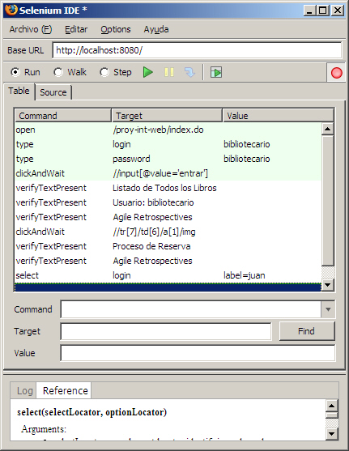
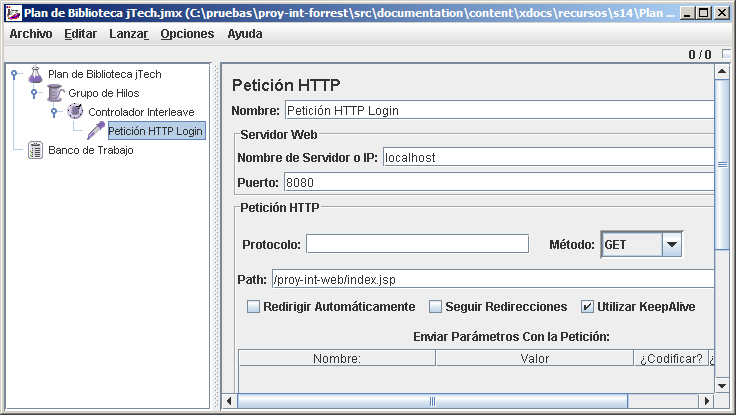

Proyecto Enterprise
Introducción
El objetivo del proyecto enterprise es poner en práctica la gran mayoría de prácticas estudiadas durante el curso, y servir como punto final donde se realicen una serie de prácticas a la finalización del proyecto.
¿Qué Tenemos?
Antes de empezar esta sesión, partimos de una aplicación empaquetada dentro de un EAR (proy-int.ear), el cual contiene una aplicación web (proy-int-web.war), un proyecto EJB (proy-int-ejb.jar) y una librería de utilidades (proy-int-comun.jar)
A nivel lógico, la aplicación esta dividida en 3 capas: presentación, negocio y datos. En el módulo de EJB, la parte de negocio de Operación se refactorizó a un EJB para aprovechar la gestión de transacciones y su escalabilidad. De este modo, el EJB de Operacion coordina las transacciones a nivel de negocio, en vez de realizarse a nivel de datos mediante JDBC.
Como podemos observar en el siguiente gráfico, únicamente el subsistema de operación se ha refactorizado a EJB. El hecho de tener en la aplicación partes implementadas mediante EJB y otras sin ellos, se trata de una decisión que hay que tomar con buenos argumentos, ya que provoca inconsistencia en el código, así como duplicidad de código (tenemos 2 factorías para BOs).
Donde Queremos Llegar
Cómo queremos una aplicación homogénea, y por cuestiones del guión hemos decidido utilizar EJBs, vamos a llevar toda nuestra lógica de negocio a EJB de sesión sin estado.
Realiza la separación en capas lógicas mediante proyectos de Eclipse y define las dependencias adecuadas.
Integrando los EJBs
Del código EJB existente, sólo destacar que nuestros EJBs están heredando de la clase propietaria de Weblogic GenericSessionBean. Esta clase funciona como adaptador y evita tener que sobrescribir los métodos ejbCreate(), ejbDestroy(). Spring ofrece diferentes adaptadores, como por ejemplo, AbstractStatelessSessionBean, que nos desacopla de un servidor de aplicaciones en concreto y facilita la reutilización de la lógica de negocio. El problema viene cuando queremos aprovechar las ventajas que nos ofrece el IDE (Eclipse/Workshop) como el tratamiento de las anotaciones
Por otro lado, para poder desacoplar la parte web de los EJBs, hemos introducido una capa mediante el patrón Business Delegate, el cual tiene el mismo interfaz que los BOs que teníamos previamente.
Al introducir los EJBs, el interfaz se mantiene, pero la implementación de los BOs cambia, ya que damos todo el control al contenedor para que gestione las transacciones de la aplicación. Ya que mantiene la misma interfaz, es muy útil obligar que los EJBs y los Business Delegate implementen el mismo interfaz (antes del uso de las anotaciones, esto era un poco engorroso ya que obligaba a que, o bien propagar RemoteExceptions, o duplicar los interfaces y mantenerlos sincronizados a mano).
Así pues, tendremos que tanto el Business Delegate implementa el interfaz
public class OperacionDelegate implements IOperacionBO
como el EJB
public class OperacionBean extends GenericSessionBean
implements SessionBean, IOperacionBO {
Service Locator
En el estado actual, sólo disponemos de una clase que utiliza un EJB, pero en las aplicaciones reales, son múltiples las clases que utilizan EJBs, y por tanto, el código de búsqueda y creación del EJB se repite a lo largo del código. El patrón Service Locator se encarga de juntar en una única clase todas las búsquedas JNDI e instanciación de servicios ofrecidos por el servidor de aplicaciones, como pueden ser EJBs, componentes JMS o datasources JDBC.
En nuestro caso, vamos a crear un singleton con estrategia de cacheo dentro del proyecto común que encapsule las búsquedas JNDI.
public class ServiceLocator {
private static Log logger = LogFactory.getLog(ServiceLocator.class.getName());
private static ServiceLocator me = new ServiceLocator();
private InitialContext ic = null;
/** Se utiliza para mantener las referencias a los EJBHomes, recursos JMS, para su reutilizacion */
private Map cache = null;
private ServiceLocator() {
try {
ic = new InitialContext();
cache = Collections.synchronizedMap(new HashMap());
} catch (NamingException ne) {
logger.error("Error naming", ne);
} catch (Exception e) {
logger.error("Error exception", e);
}
}
public static ServiceLocator getInstance() {
return me;
}
public EJBLocalHome getLocalHome(String jndiHomeName)
throws ServiceLocatorException {
EJBLocalHome home = null;
try {
if (cache.containsKey(jndiHomeName)) {
home = (EJBLocalHome) cache.get(jndiHomeName);
} else {
home = (EJBLocalHome) ic.lookup(jndiHomeName);
cache.put(jndiHomeName, home);
}
} catch (NamingException ne) {
throw new ServiceLocatorException("Error naming", ne);
} catch (Exception e) {
throw new ServiceLocatorException("Error", e);
}
return home;
}
public EJBHome getRemoteHome(String jndiHomeName, Class className)
throws ServiceLocatorException {
EJBHome home = null;
try {
if (cache.containsKey(jndiHomeName)) {
home = (EJBHome) cache.get(jndiHomeName);
} else {
Object objref = ic.lookup(jndiHomeName);
Object obj = PortableRemoteObject.narrow(objref, className);
home = (EJBHome) obj;
cache.put(jndiHomeName, home);
}
} catch (NamingException ne) {
throw new ServiceLocatorException("Error naming", ne);
} catch (Exception e) {
throw new ServiceLocatorException("Error", e);
}
return home;
}
public DataSource getDataSource(String dataSourceName)
throws ServiceLocatorException {
DataSource dataSource = null;
try {
if (cache.containsKey(dataSourceName)) {
dataSource = (DataSource) cache.get(dataSourceName);
} else {
dataSource = (DataSource) ic.lookup(dataSourceName);
cache.put(dataSourceName, dataSource);
}
} catch (NamingException ne) {
throw new ServiceLocatorException("Error naming", ne);
} catch (Exception e) {
throw new ServiceLocatorException("Error", e);
}
return dataSource;
}
}
Del mismo modo, podemos añadir métodos para buscar recursos JMS como QueueConnectionFactory, Queue, TopicConnectionFactory o Topic.
En el caso del datasource, sustituiremos el código de creación del contexto y búsqueda JNDI, por la llamada al método delegado del Service Locator:
/*
* Context initCtx = new InitialContext();
* DataSource ds = (DataSource) initCtx.lookup("BiblioDS");
*/
try {
ds = ServiceLocator.getInstance().getDataSource("BiblioDS");
} catch (ServiceLocatorException sle) {
logger.fatal("Error localizando datasource de JNDI", sle);
}
En cuanto al EJB, el ahorro de código es mayor, y por tanto, más cómodo para poder crear los EJBs en los métodos y no en el constructor.
/*
* try {
* Context jndiContext = new InitialContext();
* OperacionLocalHome home = (OperacionLocalHome) jndiContext.lookup("OperacionBeanLocal");
* operacionEJB = (OperacionLocal) home.create();
* } catch (Exception e) {
* throw new RuntimeException("Error al obtener el EJB", e);
* }
*/
try {
OperacionLocalHome home = (OperacionLocalHome)
ServiceLocator.getInstance().getLocalHome("OperacionBeanLocal");
operacionEJB = home.create();
} catch (Exception e) {
logger.error("Error creando EJB de operacion", e);
throw new RuntimeException("Error creando EJB de operacion", e);
}
Más información sobre el patrón Service Locator en: www.programacion.net/java/tutorial/patrones2/2/
Procesos Planificados
Tal como comentamos en el caso de estudio, las reservas deben caducar. En la situación actual, la única forma que tenemos de caducar las reservas es realizarlo a mano mediante la acción de "Anular Reserva" por parte de un usuario de tipo bibliotecario.
Necesitamos automatizar este proceso, de modo que cuando la fecha actual coincida con la fecha de finalización de una reserva (ffin), se elimine el registro de la base de datos. ¿Cómo hacemos esto? ¿Y si necesitamos ejecutar una tarea el último viernes de cada mes? ¿O todos los dias laborales a las 7 de la mañana? ¿Cómo lo hacemos?
Para variar, hay varias soluciones. Una de ellas es realizar un proceso que se ejecute de forma automática mediante un programador del sistema operativo, tipo cron o administrador de tareas. Esto provoca tener que configurar el sistema operativo y crear una mini-aplicación java que realice este proceso. Los Sistemas Gestores de Bases de Datos como Oracle también incluyen jobs y eventos que permiten planificar los trabajos.
En la actualidad existen soluciones Java para automatizar procesos, como las características de la clase Timer (java.sun.com/j2se/1.5.0/docs/api/java/util/Timer.html) o el uso de algún framework de planificación, como Quartz (www.opensymphony.com/quartz/).
java.util.Timer
Para implementar un planificador sencillo la propia JDK a partir de su versión 1.3 incluye las clases Timer y TimerTask (dentro del paquete java.util)
A continuación se muestra un ejemplo explicativo:
public class GeneradorInforme extends TimerTask {
public void run() {
System.out.println("Generando informe");
//TODO generar informe
}
}
class AplicacionMain {
public static void main(String[] args) {
Timer timer = new Timer();
Calendar date = Calendar.getInstance();
date.set(Calendar.DAY_OF_WEEK, Calendar.SUNDAY);
date.set(Calendar.HOUR, 0);
date.set(Calendar.MINUTE, 0);
date.set(Calendar.SECOND, 0);
date.set(Calendar.MILLISECOND, 0);
// Planificado para ejecutar cada Domingo a medianoche
timer.schedule( new GeneradorInforme(), date.getTime(), 1000 * 60 * 60 * 24 * 7 );
}
}
Podemos observar como necesitamos crear una clase que realiza la tarea planificada (en nuestro ejemplo, GeneradorInforme), la cual debe heredar de TimerTask (que a su vez implementa java.lang.Runnable). A continuación, se planifica este objeto mediante los métodos de planificación de Timer. En nuestro caso, utilizamos el método schedule() que acepta la fecha de la primer ejecución y el periodo de las siguiente ejecuciones en milisegundos.
Al utilizar las características de planificación, debemos tener en cuenta las garantías de tiempo real que ofrece el API de planificación. Desafortunadamente, debido a la naturaleza de Java y su implementación en varias plataformas, la implementación de la planificación de los hilos es inconsistentes entre varias JVM. Por esto, el Timer no puede garantizar que nuestra TimerTask se ejecutará en el momento exacto. Nuestras tareas implementadas como objetos Runnable se pone a dormir durante cierto tiempo. El Timer los despierta en un momento determinado, pero el momento exacto de ejecución depende de la política de planificación de la JVM y de cuantos hilos estén esperando a entrar a la CPU.
Existen 2 escenarios comunes que pueden provocar que nuestras tareas se ejecuten con retraso. Primero, un gran número de hilos pueden estar esperando a ejecutarse, y segundo, se puede producir un retraso por la actividad del recolector de basura.
Teniendo esto en cuenta, existen 2 modos diferentes de planificar dentro de la clase Timer: planificar mediante un retardo fijo (schedule()) y planificar con intervalos regulares (scheduleAtFixedRate()). Con los métodos del primer grupo, cada retraso en la ejecución de una tarea se propagará en las consiguientes ejecuciones de la tarea. Con los métodos del último, todo las ejecuciones posteriores se planifican a partir del tiempo de la tarea inicial, minimizando el retraso.
EJB Timer
A partir de la especificación 2.1 de EJB, el contenedor EJB puede gestionar servicios de tiempo lo que permite a los métodos EJB registrar callbacks en un tiempo determinada o en un intervalo regular. Los timers EJB ofrecen facilidades para planificar tareas predeterminadas (igual que Quartz).
Timer API
El API de EJB Timer se define mediante 4 interfaces dentro del paquete javax.ejb:
- TimedObject, el cual contiene los métodos callback utilizados para las notificaciones de expiración. El bean de implementación EJB debe implementar este interfaz.
- Timer, interfaz que contiene la información sobre el planificador creado a través del servicio EJB Timer.
- TimerHandle, manejador Serializable utilizado para persistir la información del Timer
- TimerService, el cual ofrece a los componentes EJB acceso al servicio planificador gestionado por el contenedor, y se expone a través del interfaz EJBContext.
Tenemos que utilizar los métodos createTimer del interfaz TimerService para crear un timer. El timer puede ser sencillo, el cual puede ocurrir en un momento determinado o tras un periodo de tiempo específico, o un timer periódico, el cual puede ejecutarse mediante una planificación. Los tres posibles tipos de timers son los siguientes:
| Tipo de Timer | createTimer con parámetros |
|---|---|
| Timer sencillo | createTimer(long timeoutDuration, Serializable info) |
| Timer sencillo con fecha de expiración | createTimer(Date firstDate, Serializable info) |
| Timer periódico con expiración inicial | createTimer(Date firstDate, long timeoutInterval, Serializable info) o createTimer(long timeoutDuration, long timeoutInterval, Serializable info) |
El timeoutDuration o intervalo se especifica en milisegundos, y el initialExpiration mediante un java.util.Date. El contenedor invocará el método ejbTimeOut del EJB cunado expire el timeoutDuration. Si decidimos cancelar el timer antes de que expire, tenemos que invocar el método cancel del timer.
Timers y tipos de EJBs
El uso de timers es similar para todos los tipos de EJBs, con pocas excepciones. Un timer creado por un bean de entidad se asocia con su identidad. Sin embargo, el método ejbTimeout se puede invocar en cualquier instancia de un timer creado en un bean sin estado (SLSB) o en un bean dirigido por el mensaje (MDB). El ciclo de vida del timer esta atado al del bean. Destacar que un timer no se puede utilizar con bean se sesión con estado (SFSB).
Modelo de programación
El modelo de programación es el siguiente. Cuando se acaba el tiempo del bean, el contenedor llamará a su método ejbTimeout(). Podemos poner cualquier tipo de lógica de negocio que queramos dentro del método ejbTimeout(). Por ejemplo, un bean de entidad que representa una factura podría tener un timer que se active después de 45 días. Cuando se pase este tiempo, el contenedor llamará al método ejbTimeout(). El bean de entidad de la factura podría enviar un mensaje JMS para alertar a una aplicación encargada de los cobros de que se ha pasado la fecha del pago, o enviar al cliente un e-mail solicitándole el pago.
El objeto Timer que se ha pasado a ejbTimeout() incluye características que nos permiten cancelar un temporizador, encontrar el tiempo que nos queda antes de que se acabe, u obtener un manejador para hacerlo persistente. Además, cuando establecemos un objeto Timer podemos asociarlo con cualquier objeto serializable, y así almacenar información específica de la aplicación con él. Luego cuando se acabe el temporizador podremos acceder a esa información y utilizarla para determinar como procesar el evento disparado.
Ejemplo de EJB Timer
Si queremos utilizar el service Timer de EJB para planificar una actividad de negocio, debemos seguir los siguientes pasos:
- La clase bean del EJB debe implementar el interfaz javax.ejb.TimedObject.
- Hemos de crear el timer mediante la invocación del método createTimer, bien en el método ejbCreate o en un método de negocio del EJB. Si decidimos create el timer en ejbCreate o ejbPostCreate, el timer se inicializará automáticamente cuando un cliente cree una instancia del bean. Si elegimos crear un método de negocio, tenemos que exponer este método en el/los interfaz/ces remotos y/o local. Los clientes invocarán este método para inicializar el timer.
- Tenemos que implementar en el método ejbTimeout la lógica de negocio deseada cuando finalice el timer.
Asumamos que una actividad de negocio debe realizar de forma periódica. Por lo tanto, crearemos un timer periódico, y le pasaremos la fecha inicial de expiración y el intervalo de caducidad como parámetros.
Vamos a crear un bean de sesión sin estado que utilice un timer EJB. En nuestro ejemplo, TimerDemoBean, tiene un método llamada initializeTimer que crea un timer periódico, y un cliente para planificar el timer para que se ejecute de forma periódica, e invoque al método de negocio.
public class TimerDemoBean implements SessionBean, TimedObject {
private SessionContext sc;
private TimerHandle timerHandle = null;
public void ejbCreate() {}
public void ejbActivate() {}
public void ejbPassivate() {}
public void ejbRemove() {}
public void setSessionContext(SessionContext ctx) { sc = ctx; }
public void initializeTimer(Date firstDate, long timeout, String info) {
try {
// Creamos el Timer
TimerService ts = sc.getTimerService();
Timer timer = ts.createTimer(firstDate, timeout, info);
System.out.println("Timer creado " + new Date(System.currentTimeMillis())
+ " con timeout: " + timeout + " y con info: " + info);
// Obtenemos el TimerHandle. Podemos utilizarlo para obtener valores del timer
timerHandle = timer.getHandle();
} catch (Exception e) {
System.out.println("Exception al crear timer: " + e.toString());
}
return;
}
public void ejbTimeout(Timer timer) {
// Aqui implementamos la lógica de negocio
System.out.println("Hago mis tareas");
System.out.println("ejbTimeout() invocado " + new Date(System.currentTimeMillis()
+ " con info:" + timer.getInfo()));
return;
}
}
Normalmente no queremos escribir en el código la fecha/tiempo de expiración inicial, y en cambio la pasaremos como parámetros desde el descriptor de despliegue, o dejando a los usuarios configurarlos dependiendo de sus requisitos de negocio. Evitar estas constantes hace la aplicación portable y añade flexibilidad para cambiar el intervalo cuando sea necesario. A no ser un bean de entidad, es mejor evitar la creación del timer en ejbCreate, ya que no ofrece control a los clientes para crear el timer. Sin embargo, en el caso de un bean de entidad, tiene sentido crearlo en ejbCreate o ejbPostCreate cuando se asocia con su clave primaria, de modo que podamos planificar una tarea para crear una cuenta cuando se crea un empleado.
El código de cliente necesario para invocar al método EJB que crea el timer es el siguiente:
// Localizamos el EJBHome
Context context = getInitialContext();
TimerDemoHome timerDemoHome = (TimerDemoHome) PortableRemoteObject.narrow(
context.lookup("TimerDemo"), TimerDemoHome.class);
// Utilizamos un los métodos create() para crear una instancia
TimerDemo timerDemo = timerDemoHome.create();
// Llamamos al metodo remoto para acceder al EJB
timerDemo.initializeTimer( firstDate, timeoutInterval, timerName );
Cuando se ejecuta la aplicación, esta acción llamará al servicio timer y creará un timer periódico, y el contenedor invocará al método ejbTimeout en el momento firstDate y en los intervalos especificados en timeoutInterval.
Más información en el tutorial de Sun: EJB 2.1 en java.sun.com/j2ee/1.4/docs/tutorial/doc/Session5.html, y EJB 3.0 en java.sun.com/javaee/5/docs/tutorial/doc/Session4.html
Quartz
Es un framework gratuito (www.opensymphony.com/quartz/) desarrollado por OpenSymphony (los mismos de OSCache), que se autodefine como un sistema completo de planificación de tareas que puede integrarse con aplicaciones sencillas Java o aplicaciones complejas JavaEE, y que ofrece diferentes ventajas sobre los java.util.Timer, y en algunas ocasiones, sobre EJB Timer. Aunque se defina como un sistema completo, en su uso más sencillo es muy fácil de utilizar.
¿Por qué utilizar Quartz y no EJB Timer o el API Timer?
La primera ventaja es la persistencia. Si los trabajos son estáticos, como en nuestro primer ejemplo, quizás no necesitemos almacenar los trabajos. Pero si queremos crear trabajos que se disparen dinámicamente cuando se cumplan ciertas condiciones, entonces tenemos que asegurarnos que dichas tareas no se pierdan cuando el sistema se reinicia. Quartz ofrece tanto trabajos no-persistentes como persistentes, en los cuales se almacena su estado en una base de datos, de modo que nos aseguramos que dichos trabajos no se pierden. Estos trabajos persistentes introducen una penalización en el rendimiento del sistema, por lo que hemos de usarlo solo cuando sean necesarios.
El API Timer también carece de métodos para simplificar el fecha deseada de ejecución. Lo más sofisticado que podemos hacer es poner una fecha de inicio y un intervalo periódico de ejecución. Lo que queremos en una herramienta de planificación tan potente como cron, pero integrada en Java. Quartz define org.quartz.CronTrigger que permite definir una fecha de activación de un modo flexible.
Los desarrolladores también suelen necesitar una característica adicional: gestionar y organizar los trabajos y tareas por sus nombres. En Quartz, podemos obtener los trabajos por sus nombres o pertenencia a grupos, con cual facilita mucho el trabajo en entornos donde hay un gran número de trabajos y disparadores.
Modo Básico de Empleo
Para utilizar Quartz simplemente hemos de crear una clase Java que implemente el interfaz org.quartz.Job, el cual sólo contiene un método:
public void execute(JobExecutionContext context) throws JobExecutionException;
En esta clase Job, añadiremos la lógica dentro del método execute(). El objeto JobExecutionContext que se pasa como parámetro a este método ofrece información a la instancia del trabajo sobre su entorno de ejecución, como acceso al planificador que lo ha ejecutado, el trigger que le ha disparado, los detalles del trabajo mediante el objeto JobDetail, etc...
Una vez configurada la clase Job y lanzado el planificador, Quartz se preocupará del resto. Cuando el Scheduler (planificador) determina que llega el momento de notificar al Job (trabajo), el framework Quartz llamará a execute y le cederá el control. Dentro del método no tenemos que hacer nada con Quartz, únicamente realizar las tareas que queremos. En el caso de que hayamos configurado el trabajo para que se vuelva a llama, el framework volverá a llamar al método en el momento definido.
Ahora volveremos a crear el GeneradorInforme mediante Quartz a modo de ejemplo y explicación del framework. Por un lado tenemos el trabajo, el cual se invocará cuando el planificador decida:
public class InformeQuartz implements Job {
public void execute(JobExecutionContext cntxt) throws JobExecutionException {
System.out.println("Generando informe - " + cntxt.getJobDetail().getJobDataMap().get("type"));
//TODO Generamos el informe
}
}
Y por otro lado, el planificador. En nuestro caso, hemos creado un programa Main que crea un planificador, y que utiliza un JobDataMap para pasar parametros del planificador al trabajo, todo ello, disparado por un trigger basado en cron.
public class MiPlanificador {
public static void main(String[] args) {
try {
SchedulerFactory schedFact = new org.quartz.impl.StdSchedulerFactory();// creamos una factoria
Scheduler sched = schedFact.getScheduler();// obtenemos un planificador
sched.start(); // arrancamos el planificador
// Creamos un trabajo con nombre+grupo+claseJob
JobDetail jobDetail =
new JobDetail("Trabajo Informe de Ingresos", "Grupo GeneradorInforme", InformeQuartz.class);
jobDetail.getJobDataMap().put("type","FULL");
// Creamos un disparador basado en cron
CronTrigger trigger = new CronTrigger("Disparador Informe de Ingresos", "Grupo GeneradorInforme");
trigger.setCronExpression("0 0 12 ? * SUN");
// Añadimos el trabajo+disparador al planificador
sched.scheduleJob(jobDetail, trigger);
} catch (Exception e) {
e.printStackTrace();
}
}
}
Trabajos y Disparadores
Quartz define 2 abstracciones básicas, los trabajos (jobs) y los disparadores (triggers). Un trabajo es una abstracción del trabajo que debería realizarse, y el disparador representa el instante temporal en el que la acción debería ocurrir.
Job es un interfaz, y por lo tanto, nuestra clase que desee planificarse debe implementar el interfaz org.quartz.Job (o org.quartz.StatefulJob) y sobreescribir el método execute().
La decisión de si el trabajo debe ser sin estado o con estado depende de si vamos a necesitar cambiar estos parámetros durante la ejecución. Si implementamos un Job, todos los parámetros se almacenan en el momento que el trabajo se planifica por primera vez, y todos los cambios posteriores se descartan. En cambio, si utilizamos un StatefulJob, y cambiamos los parámetros en el método execute, los cambios se llevarán a cabo cuando el trabajo se vuelva a disparar. Hay una pega, y es que los trabajos con estado no se pueden ejecutar concurrentemente, ya que los parámetros pueden cambiar durante la ejecución.
En el ejemplo, podemos observar como podemos pasar atributos al trabajo mediante el atributo jobDataMap, el cual es una implementación modificada de un java.util.Map.
Hay 2 tipos de disparadores: SimpleTrigger y CronTrigger. Mediante SimpleTrigger obtenemos la misma funcionalidad que con el API Timer. Lo utilizaremos si el trabajo debe dispararse una vez, y a continuación repetirse mediante un intervalo temporal periódico. Mediante este disparador podemos especificar la fecha inicial, la final, un contador de repeticiones, y el intervalo periódico. Por ejemplo:
Trigger trigger2Dias = new SimpleTrigger("disparador2d", "grupo2d");
trigger2Dias.setRepeatCount(SimpleTrigger.REPEAT_INDEFINITELY);
// 24 horas * 60(minutos por hora) * 60(segundos por minuto) * 1000(milisegundos por segundo)
trigger2Dias.setRepeatInterval(2L * 24L * 60L * 60L * 1000L); // se ejecuta cada 2 dias
Trigger triggerHora = TriggerUtils.makeHourlyTrigger(); // se ejecuta cada hora
triggerHora.setName("miTriggerHorario");
La clase TriggerUtils (en el paquete org.quartz) contiene operaciones comunes que ayudan a crear disparadores y fechas sin necesidad de pelearse con objetos java.util.Calendar. Mediante esta clase es muy fácil crear disparadores que se ejecuten cada minuto, hora, día, semana, mes, etc... Además, mediante esta clase podemos generar fechas redondeadas al siguiente segundo, minuto o hora, lo cual puede ser muy útil para establecer una fecha de inicio correcta.
En cambio, mediante el disparador CronTrigger, podemos crear disparadores a medida, con periodos y fechas más complejas. En el ejemplo anterior del InformeQuartz lanzado por MiPlanificador, hemos utilizado el disparador CronTrigger por su flexibilidad para planificar los trabajo mediante una base más real. Este disparador nos permite expresar planificaciones como "cada día de la semana a la 7:00 de la mañana", o "cada 5 minutos los sábados y domingos". Más información en el javadoc: quartz.sourceforge.net/javadoc/org/quartz/CronTrigger.html. Algunos ejemplos curiosos:
CronTrigger trigger5min = new CronTrigger("Disp 5 minutos", "GrupoCron");
trigger5min.setCronExpression("0 0/5 * * * ?"); //cada 5 minutos
CronTrigger trigger5min10seg = new CronTrigger("Disp 5 minutos 10 seg", "GrupoCron");
//cada 5 minutos, y 10 segundo tras el minuto (10:00:10, 10:05:10, ...)
trigger5min10seg.setCronExpression("0 0/5 * * * ?");
CronTrigger triggerHorasMediaRango = new CronTrigger("Disp 5 minutos 10 seg", "GrupoCron");
// se ejecuta 10:30, 11:30, 12:30, y 13:30, cada Miercoles y Viernes
triggerHorasMediaRango.setCronExpression("0 30 10-13 ? * WED,FRI");
La ventaja de que los conceptos de trabajo y disparador estén separados, es que se pueden crear y almacenar en el planificador de forma independientes, y muchos disparadores se pueden asociar con el mismo trabajo. Otro beneficio de este bajo acoplamiento es la habilidad para configurar trabajos que permanecen en el planificador una vez que los disparadores han expirado, de modo que pueden volver a planificarse, sin necesidad de volver a definirlos. Igualmente, permite modificar o remplazar un disparador sin tener que redefinir su trabajo asociado.
Los trabajos y disparadores se planifican a través del interfaz Scheduler. Para obtener una instancia de este interfaz, bien creamos una factoría (SchedulerFactory) y obtenemos el planificador (como en el ejemplo), o bien utilizamos el método estático getDefaultScheduler() de la clase StdSchedulerFactory (el cual creará un planificador identificado por los datos del fichero de configuración). Una vez arrancado el planificador mediante el método start(), la aplicación no terminará hasta que se llame al método shutdown().
Fichero de Configuración
Para poder ejecutar el ejemplo, necesitamos configurar el archivo quartz.properties, el cual debemos colocar en el classpath. Un ejemplo básico del archivo es el siguiente:
# Propiedades principales org.quartz.scheduler.instanceName = TestScheduler org.quartz.scheduler.instanceId = one # Configuracion del pool de hilos org.quartz.threadPool.class = org.quartz.simpl.SimpleThreadPool org.quartz.threadPool.threadCount = 5 org.quartz.threadPool.threadPriority = 4 # Configuración del almacen de trabajos org.quartz.jobStore.misfireThreshold = 5000 org.quartz.jobStore.class = org.quartz.simpl.RAMJobStore
Otra ventaja de utilizar Quartz es el uso de un pool de hilos. Quartz utiliza este pool para la ejecución de los trabajos. El tamaño elegido afecta al número de trabajos que pueden ejecutarse concurrentemente. Si el trabajo necesite activarse pero no hay ningún hilo libre, se dormirá hasta que se libere algún hilo. El número de hilos a utilizar es una decisión complicada, siendo el mejor modo de saberlo mediante la experimentación mediante diversas pruebas. El valor por defecto es 5, el cual es suficiente si no se trabaja con miles de trabajos. Quartz ofrece una implementación del pool de hilos, pero no se nos limita a su uso.
Respecto a los almacenes de trabajo (JobStore), contienen toda la información sobre los trabajos y los disparadores (a modo de diccionario de datos). Aquí es donde decidimos si vamos a mantener nuestros trabajos persistentes o no. En el ejemplo, hemos utilizado org.quartz.simpl.RAMJobStore, lo que significa que todos los datos se mantienen en memoria y por tanto no son persistentes. Como resultado, si la aplicación se cae, toda la información sobre los trabajos planificados se perderá. En algunas situaciones, este es el comportamiento deseado, pero cuando queramos hacer persistentes los datos, deberemos configurar la aplicación para que utilice org.quartz.simpl.JDBCJobStoreTX (o org.quartz.simpl.JDBCJobStoreCMP).
Dentro de una Aplicación Web/Enterprise
Si desarrollamos una aplicación web o enteprise, nos plantearemos donde es el lugar adecuado para inicializar el planificador. Para ello, Quartz ofrece el servlet org.quartz.ee.servlet.QuartzInitializerServlet. Una vez configurado en el web.xml, al inicializar la aplicación leerá el fichero de configuración y estará preparado para planificar trabajos:
<servlet>
<servlet-name>QuartzInitializer</servlet-name>
<display-name>Quartz Initializer Servlet</display-name>
<servlet-class>org.quartz.ee.servlet.QuartzInitializerServlet</servlet-class>
<init-param>
<param-name>shutdown-on-unload</param-name>
<param-value>true</param-value>
</init-param>
<load-on-startup>1</load-on-startup>
</servlet>
Es importante destacar el parametro shutdown-on-unload, el cual le dice al planificador, que cuando el servlet se destruya, también pare/destruya el planificador.
Si seguimos este enfoque, nos aseguramos que al arrancar la aplicación, tenemos el planificador por defecto arrancado y listo para ejecutar trabajos. Si lo que queremos es que una serie de trabajos se ejecuten al arrancar la aplicación, deberemos crear otro Servlet o utilizar una solución similar. En cambio, si lo que queremos es planificar trabajos cuando suceda algun evento en la aplicación, mediante este Servlet se centraliza en un punto el arranque y la parada del planificador.
Quartz y EJBs
Si queremos llamar a un método de un EJB como un trabajo, tenemos que pasarle la clase org.quartz.ee.ejb.EJBInvokerJob al detalle del trabajo (JobDetail). Para demostrar esta técnica, implementaremos el generador de informe como un bean de sesión, y llamaremos al método generarInforme() del EJB registrado en JNDI mediante InformeEJB, desde el Servlet.
public class InformeServlet extends HttpServlet {
public void init(ServletConfig conf) throws ServletException {
JobDetail jobDetail = new JobDetail("Trabajo Informe de Ingresos", "Grupo GeneradorInforme", EJBInvokerJob.class);
jobDetail.getJobDataMap().put("ejb", "java:comp/env/ejb/InformeEJB");
jobDetail.getJobDataMap().put("method", "generarInforme");
Object[] args = new Object[0];
jobDetail.getJobDataMap().put("args", args);
CronTrigger trigger = new CronTrigger("Disparador Informe de Ingresos", "Grupo GeneradorInforme");
trigger.setCronExpression("0 0 12 ? * SUN");
try {
Scheduler sched = StdSchedulerFactory.getDefaultScheduler();
sched.scheduleJob(jobDetail, trigger);
sched.start();
} catch (Exception e) {
e.printStackTrace();
}
}
}
Como podemos observar, para que Quartz funcione igual que EJB Timer, hay tres parámetros que tenemos que pasarle al trabajo:
- ejb: nombre JNDI del bean
- method: método a llamar
- args: array de objetos que se pasan como argumentos al método
El resto se mantiene igual desde el punto de vista del uso de Quartz. En el ejemplo, hemos puesto la llamada en la inicialización del servlet, aunque se puede colocar en cualquier lugar de la aplicación.
Para que se pueda ejecutar correctamente el trabajo, es necesario registrar el EJB en la aplicación web, creando una referencia en el web.xml:
<ejb-ref>
<ejb-ref-name>ejb/InformeEJB</ejb-ref-name>
<ejb-ref-type>Session</ejb-ref-type>
<home>es.ua.jtech.ejb.InformeHome</home>
<remote>es.ua.jtech.ejb.Informe</remote>
<ejb-link>InformeEJB</ejb-link>
</ejb-ref>
Un artículo muy interesante donde ampliar esta información es "What is Quartz" por Chuck Cavaness (autor de un libro sobre Quartz): http://www.onjava.com/pub/a/onjava/2005/09/28/what-is-quartz.html. Aquí podéis aprender a realizar un enfoque declarativo para especificar la información referente a los trabajos y los disparadores, de modo que almacenamos en un fichero xml toda esta información, desacoplándola del código de la aplicación.
Deshaciendo las Reservas Caducadas
Tal como hemos comentado al inicio de esta sección, queremos crear un proceso planificado que deshaga las reservas conforme caduquen. El código necesario para liberar las reservas (si utilizamos un EJB, lo colocaremos en el método ejbTimeout, y si utilizamos Quartz, dentro del método execute de una clase que implemente el interfaz Job) es el siguiente:
IOperacionDAO operacionDAO = FactoriaDAOs.getInstance().getOperacionDAO();
List<OperacionTO> reservasCaducadas;
try {
reservasCaducadas = operacionDAO.selectReservasCaducadas();
for (OperacionTO operacion : reservasCaducadas) {
logger.info("Liberando reserva " + operacion.getIdOperacion()
+ " del usuario " + operacion.getUsuario()
+ " y libro " + operacion.getLibro());
operacionDAO.anularReserva(operacion.getIdOperacion());
}
} catch (DAOException e) {
logger.error("Error caducando las reservas", e);
}
La operación de consulta de reservas caducadas selectReservasCaducadas() obtendrá aquellas reservas con fecha de finalización anterior a la fecha actual y con fecha final real nula (de modo que todavía no se ha pasado a reserva).
Multidioma
En los tiempos que corren, con la multitud de idiomas vigentes, la inmigración, la continua visita de extranjeros a nuestro país y el cariz sin limites de fronteras que ofrece Internet, se hace casi impensable el desarrollo de una aplicación en un sólo idioma.
Aun cuando los requisitos dejen claro que la aplicación deba estar sólo en español (o sólo en inglés), si desde el principio diseñamos la aplicación y la arquitectura para que soporte múltiples idiomas, cuando en el futuro (que seguro que sucede), la aplicación deba mostrarse en múltiples idiomas, los cambios necesarios serán mínimos.
La característica de una aplicación que soporta varios idiomas se conoce como internacionalización (i18n - internationalization).
Soporte Java
La plataforma Java incluye una familia de clases Java (java.util.ResourceBundle) diseñadas para soportar la búsqueda de cadenas de mensajes basadas en una clave estándar. Las clases del "Resource Bundle" automáticamente acceden a una clase Java (o a un fichero de propiedades) nombrado siguiendo una convención que incluye el Locale al que pertenecen los mensajes de dicha clase (o fichero). Sin embargo, esta selección se basa sólo en el Locales por defecto de la plataforma del servidor, y no se puede modificar por cada usuario, tal como requieren las aplicaciones web.
Struts incluye un conjunto de clases (org.apache.struts.util.MessageResources) que extienden el enfoque básico de buscar cadenas de mensajes por clave, permitiendo, de forma opcional, especificar un Locale junto con la clave. De este modo, podemos construir aplicaciones que permitan al usuario seleccionar con que Locale desean operar, y en consecuencia, buscar los mensajes en ese lenguaje (utilizando las mismas claves de mensaje, sin importar que lenguaje se ha seleccionado).
Por defecto, Struts obtiene el Locale del navegador del usuario, de modo que si el usuario tiene el navegador en ingles, la aplicación intentará mostrar los mensajes en inglés.
Para más información acerca de la internacionalización de los mensajes:
- Información general de i18n disponible en http://java.sun.com/j2se/corejava/intl/index.jsp, la cual ofrece información acerca los Locales, recursos localizados, formateo de mensajes, y otros temas de interés.
- Tutorial de i18n disponible en http://java.sun.com/docs/books/tutorial/i18n/index.html
- API Javadoc de las clases:
- java.text.MessageFormat
- java.util.ResourceBundle
- java.util.PropertyResourceBundle
- java.util.Properties
- La guia de uso de Struts incluye una sección sobre i18n: struts.apache.org/userGuide/building_view.html#i18n
- API Javadoc del paquete de Struts org.apache.struts.util
Configuración Struts
Por defecto, Struts tiene la i18n activada.
Controlador
En Struts 1.1 (y 1.0), en el archivo web.xml habiamos de informar al servlet de Struts que queríamos i18n en nuestra aplicación, de modo que obtiene el Locale del atributo Globals.LOCALE_KEY (normalmente mapeado con de la sesión.
<servlet>
<servlet-name>action</servlet-name>
<servlet-class>
org.apache.struts.action.ActionServlet
</servlet-class>
<init-param>
<param-name>config</param-name>
<param-value>/WEB-INF/struts-config.xml</param-value>
</init-param>
<init-param>
<param-name>locale</param-name>
<param-value>true</param-value>
</init-param>
</servlet>
Si no quisiéramos que el controlador activase el uso de Locale (lo que resulta en la creación de una HttpSession), hemos de poner el atributo locale a false en el fichero de configuración de struts.
<controller locale="false"/>
Fichero de Recursos
Por otro lado, para indicar en que fichero queremos almacenar los pares de clave-valor, en el archivo struts-config.xml hemos de especificar el nombre y la ruta del fichero de recursos:
<message-resources parameter="mensajes"/>
Por lo tanto, en nuestra aplicación, dicho archivo se encuentra en el paquete raíz, siendo el archivo mensajes.properties el contenedor de los mensajes del lenguaje por defecto, mensajes_ca.properties el que contiene los textos en catalán (o valenciano), mensajes_en.properties en inglés, etc... Además, cada fichero de un idioma, puede tener especializaciones geográficas, por ejemplo, inglés de Inglaterra (en_EN), inglés de EEUU (en_US), inglés de Canadá (en_CA), etc...
Es muy importante destacar que no todas las propiedades deben estar en todos los ficheros. Existe una relación jerárquica, de modo que si una propiedad no existe en el fichero hijo, se mostrar el mensaje del fichero padre. Por ejemplo, si queremos mostrar el mensaje de la propiedad "login.title", y el usuario tiene configurado el idioma inglés pero de Canadá, buscará dicha propiedad en el archivo mensajes_en_CA.properties. Si no la encuentra en dicho archivo, la buscará en mensajes_en.properties (mensajes en inglés, independiente de su localización geográfica). Finalmente, si tampoco la encuentra en inglés, la buscará en el idioma por defecto, es decir, en el archivo mensajes.properties.
Si quieseramos guardar los ficheros de recursos dentro de la carpeta "tradu", entonces hemos de añadirlo como prefijo al nombre del fichero (parameter="tradu.mensajes"), indicando cada nivel con un punto, del mismo modo que la notación de paquetes Java.
Cambio de Locale Bajo Petición del Usuario
Además, hemos de preparar un Action que cambie de forma dinámica, y bajo petición del usuario, el Locale existente en la sesión, sustituyéndolo por el deseado.
public class AccionCambiarLocale extends AccionComun {
private static Log logger = LogFactory.getLog(AccionCambiarLocale.class.getName());
public ActionForward execute(ActionMapping mapping, ActionForm actionForm,
HttpServletRequest request, HttpServletResponse response)
throws Exception {
String lenguaje = request.getParameter("lenguaje");
String pais = request.getParameter("pais");
Locale newLocale = new Locale(lenguaje, pais);
logger.info("Cambiamos locale " + request.getLocale() + " por "
+ newLocale);
HttpSession session = request.getSession();
session.setAttribute(Globals.LOCALE_KEY, newLocale);
return mapping.findForward(Tokens.FOR_OK);
}
}
Así pues, al llamar a este Action, se modificará el Locale del usuario durante una sesión. Cuando un nuevo usuario vuelva a entrar a la aplicación, volverá a aparecerle el texto con el idioma por defecto.
Finalmente, declaramos el Action en el archivo struts-config.xml:
<action path="/accionCambiarLocale"
type="es.ua.jtech.proyint.presentacion.acciones.AccionCambiarLocale">
<forward name="OK" path="/index.jsp" />
</action>
Modo de Empleo
En nuestro caso, tenemos la página login.jsp con soporte para el multidioma.
Como podemos observar, los textos a mostrar se visualizan mediante el uso del taglib bean:message, indicando en el atributo key la clave del elemento a mostrar.
<html:form action="/accionLogin">
<table border="0" cellpadding="0" cellspacing="0" width="616" align="center">
...
<tr>
<td width="1" bgcolor="#D7D6D6"><img src="imagenes/px_trans.gif" width="1" height="1"></td>
<td width="247" height="95" bgcolor="#FFFFFF" valign="middle">
<h3><bean:message key="login.bienvenida" /></h3>
</td>
<td width="367" bgcolor="#FFFFFF" colspan="2">
<table>
<tr>
<td width="11"> </td>
<td width="288" height="95" valign="middle">
<bean:message key="login.instrucciones" />
</td>
<td width="11"> </td>
</tr>
</table>
</td>
<td width="1" bgcolor="#D7D6D6"><img src="imagenes/px_trans.gif" width="1" height="1"></td>
</tr>
<tr>
<td colspan="5" height="1" bgcolor="#D7D6D6">
<img src="imagenes/px_trans.gif" width="1" height="1">
</td>
</tr>
<tr>
<td width="1" bgcolor="#D7D6D6">
<img src="imagenes/px_trans.gif" width="1" height="1">
</td>
<td width="247" height="192" bgcolor="#D7D6D6" align="right" valign="top" class="bold">
<img src="imagenes/px_trans.gif" width="1" height="30">
<bean:message key="login.login" />
<br /><br />
<bean:message key="login.password" />
</td>
<td width="367" colspan="2" align="left" valign="top">
<img src="imagenes/px_trans.gif" width="1" height="30">
<html:text property="login" maxlength="18" size="16" />
<br /><br />
<html:password property="password" maxlength="18" size="16" />
<img src="imagenes/px_trans.gif" width="22" height="1">
<html:submit value="entrar" />
</td>
<td width="1" bgcolor="#D7D6D6"><img src="imagenes/px_trans.gif" width="1" height="1"></td>
</tr>
...
</table>
</html:form>
Cada clave se va a sustituir por el mensaje correspondiente, perteneciente al fichero de recursos asociados con el Locale almacenado en la sesión (en el caso del idioma por defecto será mensajes.properties).
# -- mensajes página de login --
login.title=Login Biblioteca jTech
login.bienvenida=bienvenido a la <b>Biblioteca jTech</b>
login.instrucciones=Por favor, introduzca su <b>login y password</b> <br>para acceder a la biblioteca
login.login=login
login.password=password
# -- errores standard --
errors.header=<div class="box">
errors.footer=</div>
errors.required=el campo {0} es obligatorio
errors.integer=el valor debe ser un entero
errors.date=formato de fecha incorrecto. Debe ser {0}
...
Y, por ejemplo, en inglés, en el archivo mensajes_en.properties:
login.bienvenida=welcome to the <b>jTech Library</b> login.instrucciones=Please, type your <b>login and password</b> <br>to enter the library login.login=login login.password=password
Para editar estos archivos, existen herramientas como i18nEdit (descarga sourceforge.net/projects/i18nedit - doc: i18nedit.sourceforge.net/userdoc/), o el plugin de Eclipse ResourceBundle (resourcebundleeditor.com/)n que permiten la edición sincronizada de todos los archivos properties.
Finalmente, para cambiar el Locale bajo petición del usuario, podemos ofrecer diferentes enlaces (con textos, banderas, etc...) o un combo, que tras su selección, realice una llamada al Action antes comentado pasándole como parámetros los datos del idioma a emplear.
<logic:match name="org.apache.struts.action.LOCALE" scope="session" value="es"> Español - <html:link page="/accionCambiarLocale.do?lenguaje=en&pais=en">Inglés</html:link> </logic:match> <logic:match name="org.apache.struts.action.LOCALE" scope="session" value="en"> <html:link page="/accionCambiarLocale.do?lenguaje=es&pais=es">Spanish</html:link> - English </logic:match>
Al pulsar sobre los enlaces, tendremos diferentes vistas, con diferentes idiomas, de una misma página.
 |
La solución que hemos elegido es crear un ForwardAction llamado /index que rediriga el control a la pagina index.jsp (<action path="/index" type="org.apache.struts.actions.ForwardAction" parameter="/index.jsp" />), y en el archivo web.xml, crear un welcome-file con el action index.do (en Tomcat no reconoce un action como recurso de bienvenida, asi que también hemos creado otro archivo indexForward.jsp que también hemos añadido a la lista de bienvenida, el cual contiene una redirección al action index.do (<logic:redirect page="/index.do" />).
No olvidemos que al hacer logout, también hemos de pasar por index.do para que inicialice una nueva sesión.
2.- ¿Como podemos cambiar el idioma de la aplicación y que siga en la misma página en la que estaba?
Pruebas de Aceptación
Las pruebas de aceptación o funcionales se centra comprobar que el sistema ofrece la funcionalidad esperada por el cliente. El comportamiento funcional del sistema se puede detallar mediante una serie de casos de uso, como es la práctica de un proceso dirigido por casos de uso como RUP, o mediante un conjunto de historias de usuario cuando se sigue una metodología ágil como XP.
En XP, el cliente trabaja con el equipo de desarrollo para generar una suite de pruebas de aceptación automáticas. En proyectos más grandes que siguen RUP, normalmente es el equipo de QA el encargado de crear los scripts de prueba a partir de los casos de uso del sistema.
Las pruebas funcionales son una técnica de caja negra, y dentro del sistema de negocio confía en los casos de prueba que prueban la funcionalidad del sistema mediante el interfaz de usuario.
Diferentes herramientas ofrecen enfoques distintos, y dentro de las pruebas de aceptación, un enfoque puede ser capturar los eventos del usuario y volver a realizar todos los pasos contra el GUI (como si grabásemos una macro y luego la ejecutásemos cuantas veces necesitemos). Otro enfoque se basa en tomar el control del interfaz de usuario de forma programativa mediante el uso de scripts.
Selenium
Selenium (www.openqa.org/selenium/) es una herramienta para probar aplicaciones web, desarrollada por ThoughtWorks, siendo un proyecto open source con gran actividad en la comunidad. Las pruebas Selenium se ejecutan directamente en un navegador (IE y Firefox en Windows, Linux y MacOs), igual que hacen los usuarios reales.
Selenium nos permite probar la compatibilidad con los navegadores, ya que el mismo script de pruebas se puede ejecutar en diferentes plataformas. Y lo más importante, permite realizar pruebas funcionales, mediante pruebas de regresión para verificar la funcionalidad de la aplicación y la aceptación del cliente.
Selenium ofrece una interfaz gráfica, Selenium IDE (www.openqa.org/selenium-ide), para la grabación de los scripts. Se trata de un entorno de desarrollo para pruebas Selenium. Esta implementado mediante un extensión Firefox, y permite grabar, editar y depurar las pruebas. Tras la instalación de la extensión de Firefox, nos aparecerá una ventana como la siguiente, donde podemos observar todos los elementos característicos de un entorno de debug (play, pause, step), más un botón para grabar la prueba y elementos para mostrar el resultado de la prueba:
Selenium IDE no es sólo una herramienta de grabación, también permite editar los scripts a mano, con soporte de autocompletado y la posibilidad de mover los comandos rápidamente. Además, permite la integración de estas pruebas con cualquier lenguaje de programación, como Java, .Net, Perl, Python y Ruby, mediante el módulo de Control Remoto (www.openqa.org/selenium-rc). Una vez grabada una prueba, solo necesitamos exportar la prueba (Archivo -> Export Test As...) en el lenguaje deseado.
Se puede visualizar un video explicativo de como trabajar con Selenium en: wiki.openqa.org/download/attachments/400/Selenium+IDE.swf.
Probando la Aplicación
Vamos a simular una prueba funcional. En concreto, vamos a probar que funciona tanto la operación de reservar como la de anular la reserva. Al reservar un libro, queremos que nos lleve a la página donde elegir la usuario a reservar, y una vez realizada, la reserva aparezca en el listado de libros reservados. A partir de aquí, probaremos que al anular la reserva, nos vuelve a llevar a la página de reservas, donde dicho libro ya no aparece.
- Abrir Firefox y apuntar con el navegador a la dirección http://localhost:8080/proy-int-web
- Tras abrir Selenium, indicamos que nuestra dirección base (dirección del servidor) es http://localhost:8080
- En Selenium, pulsamos sobre el botón de grabar y empezamos a realizar nuestra prueba
- Volvemos al navegador, e introducimos como login y password el usuario bibliotecario/bibliotecario, y pulsamos en "entrar"
-
Si ahora volvemos a Selenium, podemos observar la parte de script generada, la cual será similar al siguiente gráfico:
En este momento, si decidimos parar el script, podemos ver como funciona la prueba, pulsando sobre el botón de play, de modo que en el navegador, podremos observar como se realiza el login cada vez que ejecutamos la prueba (ver demo en videoSeleniumLogin.avi).
- De nuevo en firefox, una vez tenemos el listado de libros, vamos a realizar alguna aserción para que la prueba valide que se encuentra en el listado y no se ha producido un error en el login. Para ello, vamos a seleccionar el texto de "Listado de Todos los Libros", y con el botón derecho seleccionamos la opción de verifyTextPresent Listado de Todos los Libros
Del mismo modo, también vamos a verificar que aparece el usuario bibliotecario dentro del sistema, seleccionando el texto "Usuario:bibliotecario"
- Una vez realizadas las verificaciones, vamos a probar la reserva de libros. Antes de hacer la reserva, vamos a seleccionar el titulo de un libro, por ejemplo, el de "Agile Retrospectives".
- Ahora, vamos pulsar sobre la reserva de este libro, y en la página de reserva, con Selenium añadimos las verificaciones de la acción que realizamos ("Proceso de Reserva") y del titulo del libro a reservar (el mismo que el anterior).
- Seleccionamos el usuario que realiza la reserva (en mi caso, por ejemplo, "juan"). Podemos observar como todas las verificaciones y selecciones se van almacenando como comandos en Selenium:

- Realizamos la reserva pulsando en enviar
- Verificamos que la acción de la página es "Listado de Reservas de Libros", y que aparece el titulo de libro "Agile Retrospectives" y el usuario "juan"
- Ahora vamos a comprobar que funciona la acción de anular reserva. Para ello, pulsamos sobre la imagen de anular reserva del libro "Agile Retrospectives"
- Al anular la reserva, nos quedamos en la misma página, pero el libro ha desaparecido. Para comprobar esto, mediante el interfaz de Selenium no podemos hacerlo y hemos de introducir a mano el comando sobre Selenium (utilizaremos el comando verifyNotPresent).
- En Selenium, si sobre la caja de Command comenzamos a escribir, nos aparezca un desplegable con las opciones posibles, mostrándose en el panel inferior la documentación referente al comando. Más información sobre todos los comandos en:www.openqa.org/selenium-core/reference.html.
Por lo tanto, tendremos:
- Pulsamos sobre el enlace de "Listado de Libros Disponibles", y verificamos tanto el título de la acción, como que en el listado aparece el libro.
- Paramos la grabación en Selenium, y ya tenemos una prueba completa de aceptación :) Ahora llega el momento de ejecutarla.
Se adjunta un vídeo demostrativo del proceso de realización de la prueba y su posterior ejecución: videoPruebaSelenium.avi
Un artículo interesante que trata Selenium desde el punto de vista del Test Runner: www.ibm.com/developerworks/web/library/wa-selenium-ajax/
Pruebas de Carga
Las pruebas de carga y stress forman parte del proceso de validación de un sistema para comprobar que el sistema cumple con los requisitos no funcionales, como puedan ser rendimiento, confiabilidad, escalabilidad y robustez.
Las pruebas de carga validan el rendimiento del sistema en términos de tratar un número específico de usuarios manteniendo un ratio de transacciones. Las pruebas de stress comprueban la confiabilidad y robustez del sistema cuando se superan la carga normal. Aunque el sistema puede rechazar algunas peticiones cuando esta sobrecargado, debería tener la capacidad de recuperación para mantiene el sistema funcionando sin sufrir ningún parón.
El criterio de rendimiento esperado se puede detallar de forma precisa de diferentes modos, pero lo normal es mediante un ratio requerido de transacciones cuando el sistema soporta una carga determinada. Por ejemplo, un requisito que fije el rendimiento puede citar que una petición al sistema se debe tratar en menos de 2 segundos cuando existen 10.000 usuarios dentro del sistema. En situaciones contractuales, la especificación de la carga del sistema debe ser detallada, teniendo en cuenta elementos operacionales como el entorno, tamaño de la base de datos, ancho de banda de la red, configuración del hardware, etc...
Inquietudes con el Rendimiento
Uno de los fallos en mucho proyectos es que las pruebas de rendimiento no se realizan hasta el final del proyecto. Si los problemas de rendimientos no se detectan hasta las últimas iteraciones, los cambios necesarios serán drásticos para la arquitectura de la aplicación. Los esfuerzos de los últimos minutos ponen la calidad y estabilidad de la aplicación en un riesgo alto e innecesario. Además, estos cambios de última hora siempre conllevan retrasos en la fechas de entrega.
Una buena estrategia de pruebas combinada con una arquitectura software que considere el rendimiento desde el inicio del desarrollo evita el peligro. Las iteraciones iniciales del proyecto se tienen que utilizar para construir prototipos exploratorios y comprobar todos los requisitos no funcionales. Las pruebas realizadas contra estos prototipos validan la arquitectura. Además, las mismas pruebas permanecen disponibles a los largo del desarrollo del sistema completo para asegurar la compatibilidad con los requisitos de rendimiento conforme evoluciona la aplicación.
Las pruebas de este tipo necesitan de herramientas que automaticen estas pruebas. Por suerte, nuestros amigos de Jakarta nos ofrecen JMeter.
JMeter
Apache JMeter (jakarta.apache.org/jmeter) es una herramienta de escritorio 100% Java diseñada para medir el rendimiento mediante pruebas de carga. Originalmente se diseño para probar aplicaciones web, pero desde entonces se ha expandido a otras funciones.
JMeter permite cargar muchos tipos distintos de aplicaciones. El primer concepto importante es el de "Sampler" o "Muestreador". JMeter viene con un conjunto de samplers para hacer peticiones HTTP y FTP, así como samplers para Servicios Web, bases de datos JDBC y directorios LDAP.
Mediante JMeter, no se nos limita a realizar un petición tras otra a un sampler, sino que disponemos de múltiple hilos de ejecución concurrente, procesando diversos y diferentes patrones de petición. Mediante los controladores lógicos, podemos controlar como se realizan las peticiones y en que orden.
Por supuesto, en ocasiones no queremos bombardear el sistema con peticiones una tras otra. En este caso, podemos utilizar componentes planificados (timer) para enviar un número limitado de peticiones en un periodo fijo de tiempo, o utilizar un timer para asegurar que se envían un número uniforme de peticiones dentro de un periodo de tiempo dado. JMeter incluso soporta pausas aleatorias entre los envíos de petición de modo que podemos añadir un nivel de incertidumbre a nuestras pruebas de carga.
A veces puede ser útil asegurarse que los datos retornados en una petición son correctos. Para soportar esto, podemos incluir aserciones en los datos retornados, y JMeter llevará la cuenta del número de peticiones exitosas y fallidas. Esto es muy útil para los sitios web, ya que se puede observar los datos validos que sabemos que la página retornará, y cuando dejan de aparecer estos datos, entonces algún tipo de error habrá ocurrido en el servidor.
La pieza final del puzzle es como se muestran los resultados. JMeter incluye una amplia variedad de herramientas de análisis desde simples tablas de datos, a informes agregados, gráficos con picos, medias, desviaciones, etc...
Componentes
El plan de prueba se compone de elementos de prueba que controlan la ejecución de la prueba de carga. Los elementos se añaden al plan de prueba como nodos del arbol en el panel izquierdo del GUI de JMeter.
La estructura de arbol permite una organización jerárquica de los elementos del plan. Los principales tipos de elementos son:
- Grupo de Hilos: punto de inicio del plan de prueba que controla el número de hilos que ejecutan los casos de prueba funcionales.
- Muestreados (Sampler): envía peticiones, tales como peticiones HTTP, al servidor. JMeter ofrece diferentes tipos de samplers, haciendo posible probar aplicaciones diferentes a las aplicaciones Web. Existen diferentes muestreadores para poder probar todo tipo de tecnologías, como pueden ser samplers Java, JDBC, Web Services, JMS, FTP, Email, LDAP, etc...
-
Controlador lógico: encargado de informar a JMeter cuando tratar las peticiones de servidor. Los diferentes tipos de controlador más importantes son:
- ForEach: itera sobre todos los elementos hijo y ofrece un nuevo valor en cada iteración
- If: hace condicional la ejecución de uno de los elementos hijo.
- Interleave: ejecuta alternamente uno de los samplers hijo por cada iteración del controlador.
- Loop: itera sobre cada hijo durante un número determinado de ocasiones.
- Random: realiza la ejecución de los subcontroladores de forma aleatoria.
- Simple: lugar para organizar elementos.
- Transaction: mide el tiempo tomado por todos los elementos hijos durante su ejecución.
- Elemento de configuración para añadir o modificar peticiones de servidor.
- Listener: ofrece una vision de los datos que recolecta JMeter.
Más información en jakarta.apache.org/jmeter/usermanual/test_plan.html
Creando una Prueba de Ejemplo
Para este ejemplo, vamos a probar los tiempos de respuesta de la página de login del proyecto, y el listado de todos los libros. También nos vamos a asegurar que en cada ciclo, primero se entre a la página de login y luego al listado de todos los libros, como ocurriría en el escenario estándar de cualquier usuario bibliotecario.
Tras su instalación (versión 2.2), ejecutaremos el comando jmeter.bat, y nos abrirá una aplicación Swing sobre la cual crearemos las pruebas. Las diferentes opciones de ejecución de la aplicación se pueden consultar en jakarta.apache.org/jmeter/usermanual/get-started.html
Una vez abierto JMeter, podemos observar 2 nodos en el árbol de la izquierda, uno para el "Plan de Pruebas" y otro el "Banco de Trabajo". Vamos a crear un plan de pruebas "Plan de Biblioteca jTech"
Grupo de Hilos
El siguiente paso es crear un grupo de hilos que controle la ejecución de las peticiones. Para hacer esto, botón derecho sobre el "Plan de Biblioteca jTech" y seleccionamos Añadir -> Grupo de hilos del menú emergente. Esto creará en el árbol un nodo de Grupo de Hilos bajo el nodo del Plan, y mostrará la página de propiedades en el panel de la derecha.
Dentro del grupo de hilos, podemos darle un nombre apropiado y elegir el número de hilos que queremos que ejecuten las pruebas. Hemos decidido limitar nuestro grupo a un hilo; se puede elegir el número de veces que el grupo de hilos iterará con los controladores y los samplers contenidos, o dejar que el bucle se ejecute hasta que se detenga de forma manual. El periodo de subida sirve para que los hilos se creen de forma gradual, de modo que podamos comprobar como rinde el servidor conforme crece la carga. Si el periodo de subida es 100 segundos y el número de hilos es 50, significa que el servidor tardará 100 segundos en crear los 50 hilos, es decir, un nuevo hilo cada 2 segundos. Vamos a dejar que la prueba se ejecute ininterrumpidamente.
Aunque el ejemplo sólo utilice un grupo de hilos, el nodo de plan permite la adición de muchos grupos de hilos, cada uno con su propia configuración y casos de prueba.
Controlador
Una vez creado el grupo, llega la hora de configurar los parámetros de prueba para este grupo. Haciendo click con el botón derecho sobre el "Grupo de Hilos", elegimos Controlador Lógico -> Controlador Interleave. El controlador determina cuando se realizan las peticiones al servidor, dirigiendo la ejecución y orden de los elementos del plan, y por tanto, orquestando el flujo de control. En el caso del controlador interleave, ejecutará uno de sus subcontroladores o samplers en cada iteración del bucle de pruebas, alternándose secuencialmente a lo largo de la lista.
Podemos colocar los samplers directamente bajo el grupo de hilos, pero es preferible utilizar un controlador interleave para que si fuese necesario realizar un número específico de peticiones a una página, podamos indicar el contador de bloque de forma acorde en el grupo de hilos.
Si por ejemplo, hubiésemos querido entrar a la aplicación, y luego haber realizado 100 listados de libros, podríamos haber utilizado 2 controlador: Un controlador simple y un controlador loop. El controlador simple ofrece un entorno para organizar los elementos del plan, de modo que tendría 2 hijos, uno con el sampler de petición HTTP para el login, y otro con el controlador loop. Dentro del controlador loop indicaríamos el número de iteraciones. Debajo de este controlador deberíamos añadir la petición HTTP para el listado de libros.
Sampler
Llega la hora de añadir samplers a las páginas que queremos probar, Para hacer esto, haremos click con el botón derecho sobre el controlador interleave, y elegiremos Añadir -> Muestreador -> Petición HTTP. Esto mostrará la página de propiedades de la petición HTTP en el panel derecho.
En este panel, indicamos las propiedades de la página que queremos pedir. Configuramos el servidor como localhost, y el puerto como 8080. (si probamos sobre weblogic, entonces el puerto por defecto es 7001). En el campo del path, introducimos el path completo de la página de login (/proy-int-web/index.jsp). No hay que introducir el nombre del servidor ni el puerto, ya que lo hemos introducido en la configuración de la petición. Tras añadir los parámetros para probar el login, le damos nombre a la petición.

Al especificar las de una petición HTTP, no se nos limita a probar contra una aplicación ejecutandose en local. De hecho, en la mayoría de los casos querremos probar contra una aplicación real teniendo en cuenta el tráfico de Internet así como el hardware real del servidor.
Repetiremos el proceso para crear una petición para el listado de todos los libros.
Ahora creamos una aserción para asegurarnos que la página retornada cuando hacemos login realmente es la página de inicio del bibliotecario. Hacemos click con el botón derecho sobre el nodo de la petición a la página de login y elegimos Añadir -> Aserciones -> Aserciones de Respuesta. Ponemos el campo de respuesta a "Respuesta Textual", y el patrón a "Contiene". Dentro el patrón a probar, pulsamos en añadir e introducimos "Listado de Libros". Esta aserción comprueba que el texto de respuesta de petición tras el login contiene la frase "Listado de Libros". En el caso de producirse un error, la página de error del servidor no contendrá esta cadena.
El último paso es añadir algunos Listeners para analizar los datos recibidos por JMeter. En este ejemplo, vamos a añadir un listener para los Resultados de la Aserción, para visualizar los errores producidos por las aserciones, un listener de Informe Agregado, el cual ofrece un resumen general de la prueba, y finalmente un listener con un Gráfico de Resultados, el cual ofrece un bonito gráfico con el rendimiento de la aplicación (todos mediante botón derecho sobre el Controlador Interleave, y seleccionamos Añadir -> Listener, y el tipo de listener comentado).
Una vez que la prueba esta preparada, sólo queda ejecutarla y ver los resultados. Antes debemos grabar el plan (Archivo -> Guardar) por si el ordenador "petara" durante la ejecución de las pruebas. Esto es bastante probable cuando al ejecutar las pruebas el uso de CPU alcanza una media del 95%.
Para empezar, seleccionamos Arrancar del menú Lanzar. Si queremos visualizar las pruebas conforme se ejecutan, podemos monitorizarlas mediante cualquiera de los listeners para ver que esta ocurriendo. Por ejemplo, en el gráfico podemos ver la media de rendimiento y tiempos de respuesta. Una vez que tenemos suficientes datos, llega el momento de parar la prueba y analizar los datos. Para parar la prueba, simplemente seleccionar Parar del menú Lanzar. Una vez que la prueba ha finalizado, podemos tomar el tiempo necesario para mirar los datos en detalle.
Por ejemplo, mediante el Informe Agregado, podemos obtener datos como el número de peticiones, los tiempos mínimos, medios y máximos de respuesta, porcentaje de errores o el rendimiento en términos de peticiones por segundo.
El informe ofrece una representación concisa y fácil de leer en formato de tabla. Dado que este informe muestra información resumida, no es posible averiguar como se ha comportado la aplicación durante la prueba. Para esto, necesitamos el listener gráfico.
Si lo que queremos es una representación gráfico de los datos, el listener de Gráfico de Resultados dibuja varios tipos de información relacionada con el rendimiento, incluyendo ejemplos de datos, media y mediana de tiempos empleado, desviación estándar y rendimiento.
El gráfico muestra la duración de la prueba en el eje de las X, y los tiempos de respuesta del servidor para las peticiones HTTP en el eje de las Y. Los puntos negros son los tiempos individuales de cada petición. Idealmente, el tiempo necesario por la aplicación para tratar una petición debería ser uniforme. Podemos ver como la aplicación ha tardado un máximo de 312ms en responder a una petición, tardando una media de 170ms en responder a las peticiones.
Como hemos comentado, JMeter puede probar todo tipo de aplicaciones. Si estás interesado en realizar pruebas de carga sobre Web Services y JMS tienes más información en dev2dev.bea.com/pub/a/2006/08/jmeter-performance-testing.html
Consejos JMeter
A continuación se describen una series de consejos muy útiles a la hora de realizar pruebas de carga con JMeter:
- Utiliza escenarios de prueba significativos, y construye planes de prueba que prueben situaciones representativas del mundo real. Los casos de uso ofrece un punto de partida ideal sobre los cuales construir las pruebas de carga.
- Asegúrate de ejecutar JMeter en una máquina distinta a la del sistema a probar. Esto previene a JMeter de afectar sobre los resultados de las pruebas.
- El proceso de pruebas es un proceso científico, de modo que todas las pruebas se deben realizar bajo condiciones completamente controladas. Si estas trabajando con un servidor compartido, primero comprueba que nadie más esta realizando pruebas de carga contra la misma aplicación web.
- Asegúrate de que dispones de un ancho de banda en la estación que ejecuta JMeter. La idea es probar el rendimiento de la aplicación y el servidor, y no la conexión de la red.
- Utiliza diferentes instancias de JMeter ejecutándose en diferentes máquinas para añadir carga adicional al servidor. Esta configuración suele ser necesaria para realizar pruebas de stress. JMeter puede controlar las instancias JMeter de las otras máquinas y coordinar la prueba. Más información en jakarta.apache.org/jmeter/usermanual/remote-test.html.
- Deja una prueba JMeter ejecutarse durante largos periodos de tiempo, posiblemente varios días o semanas. Estarás probando la disponibilidad del sistema y resaltando las posibles degradaciones en el rendimiento del servidor debido a una mala gestión de los recursos.
- No realices pruebas JMeter contra servidor externos de los cuales no eres responsable. Los responsables pueden considerar tu prueba un ataque de denegación de servicio.
Al diseñar y ejecutar pruebas de carga, recuerda que cada sistema tiene sus limites. Al ejecutar JMeter en varias máquinas, es muy probable que se excedan dichos límites. Esta es una prueba válida, ya que el sistema debe mostrar un comportamiento erróneo para este escenario. Sin embargo, el objetivo de las pruebas de carga es comprobar la habilidad de la aplicación para cumplirlos los criterios de rendimiento estipulados en los requisitos no funcionales.
Entrega
La parte obligatoria a entregar es la siguiente:
- Refactorizar la aplicación de modo que toda la lógica de la aplicación resida en EJBs.
- Ofrecer soporte para al menos 2 idiomas, de modo que la aplicación permita cambiar el idioma en la página de login.
- Realizar un proceso automático, eligiendo la tecnología que consideres adecuada (Timer EJB o Quartz), para que se liberen las reservas caducadas.
- Realizar una prueba de aceptación similar al ejemplo realizado con Selenium. Se debe entregar el fichero con el script de Selenium, en formato html.
- Realizar pruebas de carga sobre la página de login y listado de libros, y comprobar cuantas peticiones se realizan por segundo (rendimiento) y la velocidad de transmisión del servidor (kb/sec). Se debe entregar el fichero del plan JMeter, y una imagen con el resultado del Informe Agregado.
La parte optativa se define a lo largo de los apuntes y referencia a la refactorización de los proyectos en Eclipse, y resolver e implementar las preguntas relacionadas con el Multidioma.